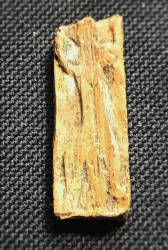
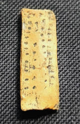
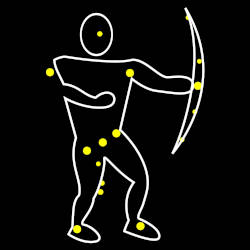
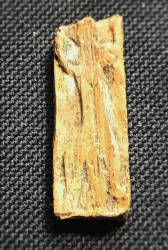
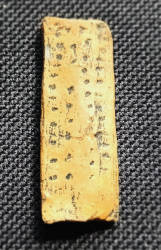
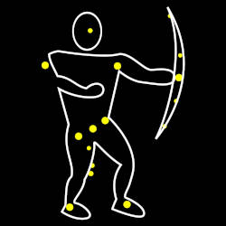

Der Adorant
Der Adorant ist eine Menschendarstellung auf einem kleinen rechteckigen Elfenbeinplättchen das 38 mm lang, 14 mm breit und 4 mm dick ist.
Er wurde 1979 von Joachim Hahn im Geißenklösterle bei Blaubeuren gefunden.
Es handelt sich dabei um eine Schnitzerei in Mammutelfenbein, die auf ein Alter von 35.000 bis 40.000 Jahren datiert wurde.
Sie ist damit etwa gleich alt wie der
 Löwenmensch
aus dem Stadel im Hohlenstein, im
Löwenmensch
aus dem Stadel im Hohlenstein, im
 Lonetal.
Lonetal.
Der Adorant wurde längere Zeit als älteste Menschendarstellung, die jemals in Europa gefunden wurde bezeichnet. Die Begründung ist einfach, dass der Löwenmensch ursprünglich auf ein Alter von 32.000 Jahren datiert wurde während der Adorant auf 35.000 Jahre datiert wurde. Inzwischen wurden die Datierungen nach oben revidiert, allerdings wird für beide ein Alter zwischen 35.000 und 40.000 Jahre angegeben, ebenso wie für die 2008 entdeckte Venusfigur. Generell sind die Funde aus Lonetal und Blautal die ältesten bekannten figürlichen Kunstwerke der Menschheit, lediglich bei den Höhlenmalereien gibt es noch ältere. Dies ist auch der Grund warum Lonetal und Blautal 2017 auf die UNESCO WHL aufgenommen wurden.
Dargestellt wird eine Gestalt, die als flaches Relief geschnitzt wurde und ihre Arme angewinkelt nach oben gestreckt hält. Auch die Beine sind nach aussen gestellt. Die Figur ist offensichtlich männlich, da sie außergewöhnlich große Genitalien aufweist. Die Haltung wird als kultischer Gestus gewertet, wobei allerdings nicht sicher ist, ob es sich um einen betenden Menschen, einen Tanz, oder um einen Schamanen bei einer Kulthandlung handelt. Daher auch der Name Adorant oder Anbeter, die Körperhaltung wurde später sehr gerne für Menschen benutzt, die etwas anbeten. Diese Darstellung ist auf jeden Fall ungewöhnlich. Figuren mit vergleichbaren Darstellungen gibt es erst wieder 20.000 Jahre später aus dem Magdalénien.
Die Figur wurde als Amulett getragen und weist rätselhafte Ritzungen an der Rückseite auf. Der Sinn dieser Markierungen konnte nicht ermittelt werden.
"Orion, in der Astronomie, ist ein großes Sternbild..., benannt nach dem mythologischen griechischen Jäger. Orion ist eines der auffälligsten Sternbilder und enthält viele helle Sterne.“ Encyclopædia Britannica
Allerdings gibt es eine Arbeit von Michael A. Rappenglück, die das Amulett als Sternenkarte interpretiert. Dann wäre die Menschenfigur eine Darstellung des Sternbilds Orion, das auch heute noch in dieser Form dargestellt wird. Jäger mit Waffen im Allgemeinen. Selbst die riesigen Genitalien werden durch eine Gruppe von Sternen erklärt. Und die etwas anderen Proportionen lassen sich mit der bekannten Veränderung des Sternbilds in den letzten 35.000 Jahren erklären. Die Punkte auf der Rückseite dienen der Orientierung durch Peilen auf das Sternbild des Orions. Das Amulett wäre also eine Art Vorgänger des Kompasses.
 






Literatur
- Michael A. Rappenglück (1999): Eine Himmelskarte aus der Eiszeit? Ein Beitrag zur Urgeschichte der Himmelskunde und zur paläoastronomischen Methodik, Frankfurt am Main: Peter Lang Europäischer Verlag der Wissenschaften.
- Michael A. Rappenglück (2003):
The Anthropoid in the Sky: Does a 32,000-year Old Ivory Plate Show the Constellation Orion Combined with a Pregnancy Calendar?,
In: Calendars, Symbols, and Orientations: Legacies of Astronomy in Culture: Proceedings of the 9th Annual Meeting of the European Society for Astronomy in Culture (SEAC).
The Old Observatory, Stockholm, 27–30 August 2001, Mary Blomberg, Peter E. Blomber, und Göran Henriksson, editors.
pp 51-55, Uppsala: Uppsala University.
academia.edu

- Ewa Dutkiewicz (2023): Die Kosmologie der Altsteinzeit, In: Kosmos. Vom Umgang mit der Welt zwischen Ausdruck und Ordnung. pp. 29-63, Heidelberg University Publishin. pdf DOI
 Subterranean World Heritage List
Subterranean World Heritage List Adorant vom Geißenklösterle - Wikipedia (visited: 22-APR-2025)
Adorant vom Geißenklösterle - Wikipedia (visited: 22-APR-2025) Index
Index Themen
Themen Hierarchisch
Hierarchisch Länder
Länder Karten
Karten Suche
Suche{kind=link}
{kind=link}
{kind=link}